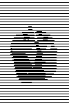

This filter produces an engraving effect: the image is turned black and white and some horizontal lines of varying height are drawn depending on the value of underlying pixels. The resulting effect reminds of engravings found in coins and old book illustrations.

- Presets, “Input Type”, Clipping, Blending Options, Preview, Merge filter, Split view
-
![[Note]](images/note.png)
Note These options are described in Section 2, “Common Features”.
- Height
-
This option specifies the height of the engraving lines. The value goes from 2 to 16.
- Limit line width
-
If this option is enabled thin lines are not drawn on contiguous color areas. See the figure below for an example of this option result.
Figure 17.62. Example result of Limit line width option
Original image
Limit line width option enabled

Limit line width option disabled